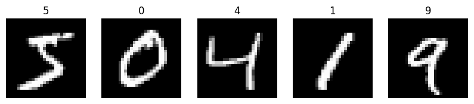
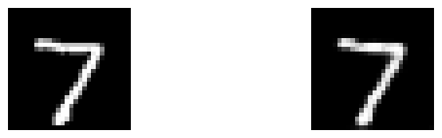
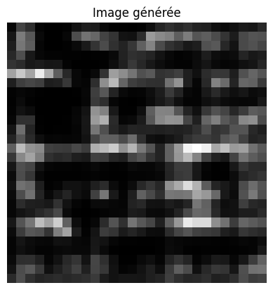
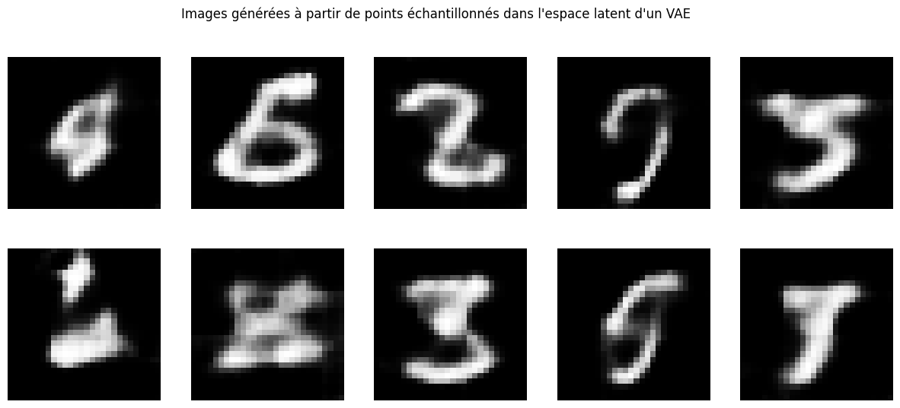

变分自编码器（VAE）的实现#
在本教程中，我们将实现一个变分自编码器（VAE）来生成基于 MNIST 数据集的图像。 首先，我们将构建一个经典自编码器，以展示这种架构无法生成新样本的局限性。
import numpy as np
import random
import torch
import torch.nn as nn
import torch.nn.functional as F
import torchvision.transforms as T
from torchvision import datasets
from torch.utils.data import DataLoader
import matplotlib.pyplot as plt
/home/aquilae/anaconda3/envs/dev/lib/python3.11/site-packages/tqdm/auto.py:21: TqdmWarning: IProgress not found. Please update jupyter and ipywidgets. See https://ipywidgets.readthedocs.io/en/stable/user_install.html
from .autonotebook import tqdm as notebook_tqdm
数据集#
首先，我们加载 MNIST 数据集：
transform = T.Compose([
T.ToTensor(),
T.Normalize((0.5,), (0.5,))
])
dataset = datasets.MNIST(root='./../data', train=True, download=True,transform=transform)
test_dataset = datasets.MNIST(root='./../data', train=False,transform=transform)
print("taille du dataset d'entrainement : ",len(dataset))
print("taille d'une image : ",dataset[0][0].numpy().shape)
train_dataset, validation_dataset=torch.utils.data.random_split(dataset, [0.8,0.2])
train_loader = DataLoader(train_dataset, batch_size=64, shuffle=True)
val_loader= DataLoader(validation_dataset, batch_size=64, shuffle=True)
test_loader = DataLoader(test_dataset, batch_size=64, shuffle=False)
taille du dataset d'entrainement : 60000
taille d'une image : (1, 28, 28)
# Visualisons quelques images
plt.figure(figsize=(10, 10))
for i in range(5):
plt.subplot(1, 5, i+1)
plt.imshow(dataset[i][0].squeeze(), cmap='gray')
plt.axis('off')
plt.title(dataset[i][1])

MNIST 上的自编码器#
我们构建自编码器的网络架构：
class AE(nn.Module):
def __init__(self):
super(AE, self).__init__()
self.encoder = nn.Sequential(
nn.Conv2d(1, 16, 3, stride=2, padding=1), # -> [16, 14, 14]
nn.ReLU(),
nn.Conv2d(16, 8, 3, stride=2, padding=1), # -> [8, 7, 7]
nn.ReLU(),
nn.Conv2d(8, 8, 3, stride=2, padding=1) # -> [8, 4, 4]
)
self.decoder = nn.Sequential(
nn.ConvTranspose2d(8, 8, 3, stride=2, padding=1, output_padding=0),
nn.ReLU(),
nn.ConvTranspose2d(8, 16, 3, stride=2, padding=1, output_padding=1),
nn.ReLU(),
nn.ConvTranspose2d(16, 1, 3, stride=2, padding=1, output_padding=1),
nn.Tanh()
)
def forward(self, x):
x = self.encoder(x)
x = self.decoder(x)
return x
dummy_input = torch.randn(1, 1, 28, 28)
model = AE()
output = model(dummy_input)
print(output.shape)
torch.Size([1, 1, 28, 28])
我们定义训练所需的超参数：
epochs = 10
criterion = nn.MSELoss()
optimizer = torch.optim.Adam(model.parameters(), lr=0.001)
接下来，我们训练模型：
for epoch in range(epochs):
for img,_ in train_loader:
optimizer.zero_grad()
recon = model(img)
loss = criterion(recon, img)
loss.backward()
optimizer.step()
print('epoch [{}/{}], loss:{:.4f}'.format(epoch+1, epochs, loss.item()))
epoch [1/10], loss:0.0330
epoch [2/10], loss:0.0220
epoch [3/10], loss:0.0199
epoch [4/10], loss:0.0186
epoch [5/10], loss:0.0171
epoch [6/10], loss:0.0172
epoch [7/10], loss:0.0175
epoch [8/10], loss:0.0168
epoch [9/10], loss:0.0159
epoch [10/10], loss:0.0148
我们检查模型在测试数据上的表现：
for data in test_loader:
img, _ = data
recon = model(img)
break
plt.figure(figsize=(9, 2))
plt.gray()
plt.subplot(1, 2, 1)
plt.imshow(img[0].detach().numpy().squeeze())
plt.axis('off')
plt.subplot(1, 2, 2)
plt.imshow(recon[0].detach().numpy().squeeze())
plt.axis('off')
plt.show()

现在，我们可视化潜在空间，并观察 10 个类别在此空间中的分布情况。
# On commence par extraire les représentations latentes des données de test
latents = []
labels = []
with torch.no_grad():
for data, target in test_loader:
latent = model.encoder(data)
latents.append(latent)
labels.append(target)
latents = torch.cat(latents)
labels = torch.cat(labels)
我们使用 T-SNE 方法 提取 2D 表示，以可视化数据。
from sklearn.manifold import TSNE
latents_flat = latents.view(latents.size(0), -1)
tsne = TSNE(n_components=2, random_state=0)
latent_2d = tsne.fit_transform(latents_flat)
plt.figure(figsize=(10, 8))
scatter = plt.scatter(latent_2d[:, 0], latent_2d[:, 1], c=labels, cmap='viridis', alpha=0.5)
plt.colorbar(scatter)
plt.title('Visualisation de l\'espace latent de MNIST avec un autoencodeur CNN')
plt.xlabel('Dimension 1')
plt.ylabel('Dimension 2')
plt.show()

如预期所示，各类别在潜在空间中分布清晰。然而，存在大量空白区域，这使得：
随机采样潜在空间中的点
生成合理且连贯的真实数据
变得十分困难。
我们尝试从潜在空间的随机点生成图像，观察其结果：
latent_dim = (8, 4, 4)
sampled_latent = torch.randn(latent_dim).unsqueeze(0)
# On générer l'image avec le décodeur
with torch.no_grad():
generated_image = model.decoder(sampled_latent)
generated_image = generated_image.squeeze().numpy() # Supprimer la dimension batch et convertir en numpy
generated_image = (generated_image + 1) / 2 # Dénormaliser l'image (car Tanh est utilisé)
plt.imshow(generated_image, cmap='gray')
plt.title("Image générée")
plt.axis('off')
plt.show()

如预期所示，生成的图像缺乏连贯性，无法识别为有效数字。
变分自编码器（VAE）#
现在，我们基于相似的架构（略有调整），实现一个 VAE，以验证其生成数据的能力。
class VAE(nn.Module):
def __init__(self,latent_dim=8):
super(VAE, self).__init__()
# Encodeur
self.encoder_conv = nn.Sequential(
nn.Conv2d(1, 16, 3, stride=2, padding=1), # -> [16, 14, 14]
nn.ReLU(),
nn.Conv2d(16, 8, 3, stride=2, padding=1), # -> [8, 7, 7]
nn.ReLU(),
nn.Conv2d(8, 8, 3, stride=2, padding=1) # -> [8, 4, 4]
)
self.fc_mu = nn.Linear(8*4*4, latent_dim)
self.fc_logvar = nn.Linear(8*4*4, latent_dim)
# Décodeur
self.decoder_fc = nn.Sequential(
nn.Linear(latent_dim, 8*4*4),
nn.ReLU()
)
self.decoder_conv = nn.Sequential(
nn.ConvTranspose2d(8, 8, 3, stride=2, padding=1, output_padding=0),
nn.ReLU(),
nn.ConvTranspose2d(8, 16, 3, stride=2, padding=1, output_padding=1),
nn.ReLU(),
nn.ConvTranspose2d(16, 1, 3, stride=2, padding=1, output_padding=1),
nn.Tanh()
)
def encode(self, x):
h = self.encoder_conv(x)
h = h.view(h.size(0), -1)
mu = self.fc_mu(h)
logvar = self.fc_logvar(h)
return mu, logvar
def reparametrize(self, mu, logvar):
std = torch.exp(0.5 * logvar)
eps = torch.randn_like(std)
return mu + eps * std
def decode(self, z):
h = self.decoder_fc(z)
h = h.view(h.size(0), 8, 4, 4)
return self.decoder_conv(h)
def forward(self, x):
mu, logvar = self.encode(x)
z = self.reparametrize(mu, logvar)
return self.decode(z), mu, logvar
dummy_input = torch.randn(1, 1, 28, 28)
model = VAE()
output,mu,logvar = model(dummy_input)
print(output.shape, mu.shape, logvar.shape)
torch.Size([1, 1, 28, 28]) torch.Size([1, 8]) torch.Size([1, 8])
epochs = 10
criterion = nn.MSELoss()
optimizer = torch.optim.Adam(model.parameters(), lr=0.001)
def loss_function(recon_x, x, mu, logvar):
MSE = F.mse_loss(recon_x, x, reduction='sum')
KLD = -0.5 * torch.sum(1 + logvar - mu.pow(2) - logvar.exp())
return MSE + KLD
for epoch in range(epochs):
for data,_ in train_loader:
optimizer.zero_grad()
recon, mu, logvar = model(data)
loss = loss_function(recon, data, mu, logvar)
loss.backward()
optimizer.step()
print(f'Epoch {epoch}, Loss: {loss / len(train_loader.dataset)}')
Epoch 0, Loss: 0.1811039298772812
Epoch 1, Loss: 0.14575038850307465
Epoch 2, Loss: 0.14808794856071472
Epoch 3, Loss: 0.14365650713443756
Epoch 4, Loss: 0.14496898651123047
Epoch 5, Loss: 0.13169685006141663
Epoch 6, Loss: 0.1442883014678955
Epoch 7, Loss: 0.14070650935173035
Epoch 8, Loss: 0.12996357679367065
Epoch 9, Loss: 0.1352960765361786
latents = []
labels = []
with torch.no_grad():
for data, target in test_loader:
mu, logvar = model.encode(data)
latents.append(mu)
labels.append(target)
latents = torch.cat(latents)
labels = torch.cat(labels)
from sklearn.manifold import TSNE
tsne = TSNE(n_components=2, random_state=0)
latent_2d = tsne.fit_transform(latents)
import matplotlib.pyplot as plt
plt.figure(figsize=(10, 8))
scatter = plt.scatter(latent_2d[:, 0], latent_2d[:, 1], c=labels, cmap='viridis', alpha=0.5)
plt.colorbar(scatter)
plt.title('Visualisation de l\'espace latent de MNIST avec un VAE')
plt.xlabel('Dimension 1')
plt.ylabel('Dimension 2')
plt.show()

我们发现潜在空间仍然非常分散。这是因为：
重构损失（Reconstruction Loss） 与 Kullback-Leibler 散度（KL Divergence） 之间的权衡失衡。
在训练过程中，重构损失的权重远高于 KL 散度。
现在我们可以生成图像。但由于潜在空间缺乏连续性和完备性，生成的样本可能无法清晰对应真实数字。
latent_dim = 8
num_images = 10
images_per_row = 5
sampled_latents = torch.randn(num_images, latent_dim)
with torch.no_grad():
generated_images = model.decode(sampled_latents)
generated_images = generated_images.squeeze().numpy() # Supprimer la dimension batch et convertir en numpy
generated_images = (generated_images + 1) / 2 # Dénormaliser les images (car Tanh est utilisé)
fig, axes = plt.subplots(2, images_per_row, figsize=(15, 6))
for i, ax in enumerate(axes.flat):
ax.imshow(generated_images[i], cmap='gray')
ax.axis('off')
plt.suptitle("Images générées à partir de points échantillonnés dans l'espace latent d'un VAE")
plt.show()

如预期所示，部分生成图像缺乏实际意义。
练习建议： 尝试优化潜在空间表示，以确保每次生成连贯且合理的图像。
注意：
重构质量与潜在空间性质之间始终存在权衡（Trade-off）。
调整超参数（如 KL 散度权重）时，需综合考虑两者平衡。